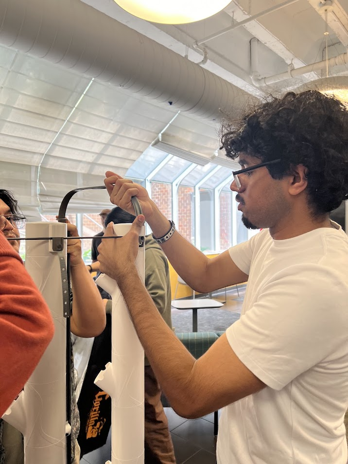

Project Lead: Karandeep Singh
Duration: 06/09/2025 → 07/18/2025
This case study is on the hydroponic farm I set up with my ITAG Cohort inside The New York Institute of Technology. This farm was created to teach us the basics of hydroponic farming and to showcase hydroponics to students at the school.
The Background: Hydroponics is a unique field. It brings farming to virtually any location and is more important than ever. The more exposure the field has, the more it can grow. Hydroponics is a much more sustainable method of farming, using far less land, resources, and water.
The Problem: There is not enough exposure to hydroponics for the public.
Recommendations: I would strongly recommend assembling a hydroponic farm as a team, as it made our process much smoother. Even with 6–8 people working on setup, it took us 2 hours to finish the farm.
Steps Taken: We opened the boxes with the parts, split into teams of two, one group built the tents, the other built the farms, we swapped roles halfway through, placed the plant pods, and finally turned the systems on.
What concepts have you learned from Change Food for Good's Intro to AgTech Course that apply to your case? I learned the value of teamwork and hydroponic systems. After working with my groupmates, I truly realized how much more efficient teamwork is compared to doing everything alone. It is even better when there is open and honest communication between team members. I also loved learning how to assemble and start up pre-built hydroponic farms. Being hands-on really helped me understand the use of these farms, as we fit three systems in a small corner of a school lobby!
The building process was time-consuming, and we had to deal with multiple distractions.
Groupmates communicated to make the process easier, and distractions such as lunch were handled as quickly as possible.
The end result was a functioning hydroponic farm in the NYIT Lobby.
For the Future: I would honestly set up more farms if possible; this was a very fun activity.
Biggest Takeaway: Hydroponics is a very underappreciated field that could use more exhibits like the one we set up.